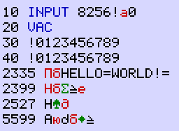
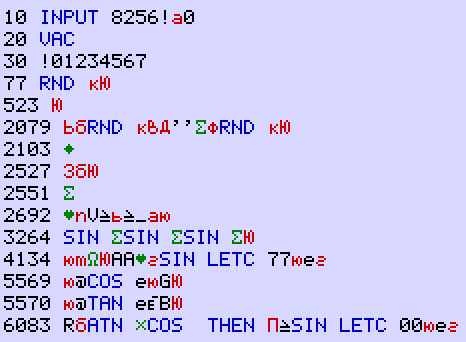
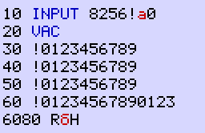

| Indeks | English version
|
Uruchamianie programów maszynowych okaza³o siê mo¿liwe dziêki lukom w implementacji komendy INPUT.
Tradycyjnie pierwszym przyk³adem, który siê pisze przy poznawaniu nowego systemu lub jêzyka programowania, jest program wy¶wietlaj±cy napis "Hello world". Tak bêdzie równie¿ w tym przypadku:
.radix 16 ;wszystkie liczby szesnastkowe
start: mov #41,@#8264 ;zmienna systemowa
loop: jsr r4,print1
.asciz "HELLO WORLD! "
br loop
print1: jsr pc,@#1248 ;procedura ROM wy¶wietlaj±ca ³añcuch
rts r4
Niestety, tego programu nie da siê wpisaæ, poniewa¿ nie wszystkie kody znaków s± dostêpne z klawiatury, a poza tym program musi trochê wygl±daæ jak BASIC ¿eby zosta³ zaakceptowany przez edytor. Oto zmodyfikowana wersja programu spe³niaj±ca te warunki:
start: 8272: bmi 82B6 8296: jsr r4,@#82B0 829A: .asciz "HELLO=WORLD!=" 82A8: jsr r5,@#82AE 82AC: sob r0,8296 82AE: rts r5 82B0: jsr pc,@#1248 82B4: rts r4 82B6: mov #8041,@#8264 82BC: sob r0,8296
Tak wygl±da gotowy program, który nale¿y zapisaæ jako P0 (w odró¿nieniu od pozosta³ych ma sta³y adres pocz±tkowy):

Zwyk³e znaki alfabetu ³aciñskiego s± w kolorze czarnym, cyrylica w kolorze czerwonym, znaki graficzne w kolorze zielonym, s³owa kluczowe BASIC w kolorze niebieskim. Trzeba na to bardzo uwa¿aæ, poniewa¿ ró¿ne znaki z ró¿nych zestawów mog± wygl±daæ podobnie lub identycznie.
8260: 7B 81 00 00 81 00 00 00 00 08 00 0A 00 DF 38 32 {.............82
8270: 35 36 21 81 30 00 14 00 E7 00 1E 00 21 30 31 32 56!.0.......!012
8280: 33 34 35 36 37 38 39 00 28 00 21 30 31 32 33 34 3456789.(.!01234
8290: 35 36 37 38 39 00 1F 09 B0 82 48 45 4C 4C 4F 3D 56789.....HELLO=
82A0: 57 4F 52 4C 44 21 3D 00 5F 09 AE 82 0C 7E 85 00 WORLD!=._.......
82B0: DF 09 48 12 84 00 DF 15 41 80 64 82 14 7E 00 00 ..H.....A.d.....
 mk85fipr.zip - plik obrazu pamiêci RAM dla
emulatora
mk85fipr.zip - plik obrazu pamiêci RAM dla
emulatora
Komenda INPUT traktuje sta³± numeryczn± w polu argumentu tak jak zmienn± ³añcuchow± $ (w wyniku braku sprawdzenia co rzeczywi¶cie jest zwracane przez procedurê przetwarzaj±c± wyra¿enia w okolicy adresu 1C62). Kopiuje ona wpisany ³añcuch o d³ugo¶ci do 1E znaków pod adres pamiêci przeznaczonej dla zmiennej. Adres zmiennej jest pobierany z drugiego s³owa danej na stosie. W przypadku sta³ej numerycznej to s³owo zawiera pierwsze cztery cyfry mantysy.
Jest to mo¿liwe przez wykorzystanie instrukcji skoku po¶redniego poprzez zmienn± 8258, znajduj±cego siê w pamiêci ROM pod adresem 0E76. Ten fragment kodu jest miêdzy innymi dostêpny z g³ównej pêtli obs³ugi trybu interaktywnego, mniej wiêcej pod adresem 0BC6. Oryginalnie jest przeznaczony do wznowienia wykonywania programu BASIC po wyst±pieniu warunku STOP.
Procedura obs³ugi komendy INPUT u¿ywa zmiennej 8258 do tymczasowego przechowania wska¼nika do interpretowanego programu BASIC. Wynika z tego, ¿e mo¿na wykonaæ jako program maszynowy dane nastêpuj±ce po INPUT, je¿eli uda³oby siê przej¶æ do pêtli trybu interaktywnego przy spe³nieniu poni¿szych warunków:
W takiej sytuacji wci¶niêcie klawisza [EXE] jest b³êdnie interpretowane jako ¿±danie wznowienia wykonywania programu BASIC, co w efekcie powoduje uruchomienie kodu maszynowego u¿ytkownika wskazywanego przez zmienn± 8258.
Aktualnie znane mi s± dwie metody przej¶cia do pêtli trybu interaktywnego:
Zwykle stan STOP jest spowodowany przez wci¶niêcie klawisza [STOP], wykonaniem instrukcji STOP, lub prac± w trybie TRACE. Obs³ug± tego stanu zajmuje siê procedura 179A, która wy¶wietla numer programu i wiersza, a nastêpnie przechodzi do trybu interaktywnego.
Mo¿na wymusiæ taki stan przez ustawienie bitu 0 zmiennej 8256
(mode) zmieniaj±c jej zawarto¶æ z 8000 na 8001.
Odbywa siê to przez wpisanie ³añcucha w odpowiedzi na komendê
INPUT 8256 w wierszu 10.
Znaku o kodzie 01 wprawdzie nie da siê wpisaæ z klawiatury, ale
znak o kodzie 31 ('1') pasuje równie¿.
Jednak sam znak '1' zmieni³by równie¿ bardziej znacz±cy bajt zmiennej
mode na 00, poniewa¿ ³añcuch zakoñczony jest zerem.
Konieczne jest wpisanie jeszcze trzech dalszych znaków, ¿eby równie¿
zachowaæ stan zmiennej 8258.
Koñcowy bajt 00 naruszy dopiero zmienn± 825A, która nie jest w
wa¿na w tym kontek¶cie.
W celu przej¶cia to trybu interaktywnego pozosta³o wykonaæ jak±¶ komendê BASIC dozwolon± zarówno w programie jak i w trybie interaktywnym, na przyk³ad VAC (w wierszu 20). Ta grupa komend ma wspólny punkt wyj¶cia pod adresem 1652, a stamt±d do pêtli trybu interaktywnego 0BA0 lub pêtli interpretacji programu BASIC, zale¿nie od stanu bitu 0 zmiennej mode.
Wci¶niêcie klawisza [AC] jest obs³ugiwane pod adresem 05C0 w ROM. Ta procedura kasuje bufor wej¶ciowy oraz wy¶wietlacz, a nastêpnie przechodzi do pêtli trybu interaktywnego, nie modyfikuj±c zmiennych 8256 i 8258. Przy tej metodzie argument komendy INPUT jest bez znaczenia (nie musi to byæ sta³a numeryczna, mo¿na u¿yæ dowolnej zmiennej). Równie¿ zbêdna jest komenda VAC w wierszu 20 (nigdy nie jest wykonywana).
Pisanie programów maszynowych wygl±daj±cych jak BASIC okaza³o siê k³opotliwym i czasoch³onnym zajêciem. Poni¿ej opisana metoda pozwala na uruchamianie dowolnych programów bez ¿adnych sztucznych ograniczeñ.
Ten etap rezerwuje bezpieczne miejsce w pamiêci dla programów
maszynowych przez modyfikacjê zmiennej systemowej ramtop pod
adresem 8252.
Obszar pamiêci od ramtop a¿ do koñca pozostanie niedostêpny
dla systemu BASIC.
Poni¿szy program modyfikuje zmienn± ramtop:
10 INPUT 8252:VAC
Wpisanie do zmiennej ramtop warto¶ci 8680 rezerwuje obszar pamiêci o rozmiarze 0180 bajtów rozpoczynaj±cy siê od adresu 8680 (wszystkie liczby szesnastkowe). Ta warto¶æ odpowiada ³añcuchowi , który trzeba wpisaæ w odpowiedzi na INPUT. Program wystarczy uruchomiæ tylko raz. Nowa konfiguracja pamiêci bêdzie zachowana tak d³ugo, jak nie zostanie wci¶niêty prze³±cznik init na tylnej ¶ciance lub wywo³ana komenda TEST.
Nastêpny program kopiuje do przydzielonego obszaru plik binarny zapisany jako ci±g liczb szesnastkowych w wierszach programu BASIC, a nastêpnie wykonuje instrukcjê skoku na pocz±tek tego obszaru. Tak jak w poprzednim przyk³adzie, pewne udziwnienia s± spowodowane konieczno¶ci± dopasowania siê do struktury wymuszonej przez jêzyk BASIC.
.radix 16
.loc 8272
start: bmi start1
.loc 8286
exec: jmp (r5)
loop: tstb (r2)+ ;separator lub znak koñca wiersza
nop
bne byte
nop
jsr r0,@#return ;wype³niacz bez funkcji
line: tstb (r2)+
cmpb (r2)+,#2727 ;test czy numer wiersza > 9987
bcc exec1
tstb (r2)+ ;pominiêcie znaku '!'
nop
jsr r0,return ;wype³niacz bez funkcji
byte: jsr pc,@#digit
nop
jsr pc,digit
inc r4 ;wype³niacz bez funkcji
movb r0,(r3)+
sob r1,loop
exec1: sob r2,exec
start1: bmi start2
return: rts r0
digit: asl r0
asl r0
asl r0
asl r0
nop
mov r0,-(sp)
movb (r2)+,r0
cmpb r0,#4141 ;'A'
bcs digit1
sub #3737,r0
add (sp)+,r0
rts pc
start2: mov #4080,r1
add #8800-4080,r1 ;r1 = koniec pamiêci RAM
nop
mov #4080,r2
add #data+1-4080,r2 ;r2 = adres ¼ród³owy
nop
mov 8252,r3 ;adres docelowy = zmienna ramtop
mov r3,r5 ;wektor skoku
sub r3,r1 ;maksymalna ilo¶æ bajtów
sob r2,line
digit1: sub #3030,r0
add (sp)+,r0
rts pc
data: ;tu rozpoczynaj± siê dane

Po programie ³aduj±cym oczekiwane s± wiersze BASIC zawieraj±ce listê bajtów w formacie szesnastkowym poprzedzon± wykrzyknikiem. Poszczególne bajty rozdzielone s± pojedynczym znakiem (preferowany przecinek lub spacja). Ilo¶æ bajtów w wierszu mo¿e byæ dowolna. Wszystko powinno byæ zakoñczone wierszem o numerze 9988 lub wiêkszym. Poni¿szy przyk³ad powsta³ w wyniku asemblacji pierwotnej wersji programu "Hello world":
9000 !DF,15,41,00,64,82,37,09 9010 !10,00,48,45,4C,4C,4F,20 9020 !57,4F,52,4C,44,21,20,00 9030 !F6,01,DF,09,48,12,84,00 9999 END
Jest to sporo wpisywania i ³atwo siê pomyliæ.
Wszystko trzeba dwukrotnie sprawdziæ!
Program ³aduj±cy razem z danymi wygl±daj± w pamiêci tak:
8260: 6D 81 00 80 00 80 00 00 00 00 00 0A 00 DF 38 32 m.............82 8270: 35 36 21 81 30 00 14 00 E7 00 1E 00 21 30 31 32 56!.0.......!012 8280: 33 34 35 36 37 00 4D 00 D2 8B A0 00 0B 02 A0 00 34567.M......... 8290: 1F 08 B8 82 D2 8B 97 A4 27 27 0C 86 D2 8B A0 00 ........''...... 82A0: 37 08 14 00 DF 09 BA 82 A0 00 F7 09 0C 00 84 0A 7............... 82B0: 13 90 56 7E 98 7E 0F 81 80 00 C0 0C C0 0C C0 0C ..V............. 82C0: C0 0C A0 00 26 10 80 94 17 A0 41 41 13 87 C0 E5 ....&.....AA.... 82D0: 37 37 80 65 87 00 C1 15 80 40 C1 65 80 47 A0 00 77.e.....@.e.G.. 82E0: C2 15 80 40 C2 65 7D 42 A0 00 C3 17 52 82 C5 10 ...@.e}B....R... 82F0: C1 E0 B0 7E C0 E5 30 30 80 65 87 00 28 23 21 44 ......00.e..(#!D 8300: 46 2C 31 35 2C 34 31 2C 30 30 2C 36 34 2C 38 32 F,15,41,00,64,82 8310: 2C 33 37 2C 30 39 00 32 23 21 31 30 2C 30 30 2C ,37,09.2#!10,00, 8320: 34 38 2C 34 35 2C 34 43 2C 34 43 2C 34 46 2C 32 48,45,4C,4C,4F,2 8330: 30 00 3C 23 21 35 37 2C 34 46 2C 35 32 2C 34 43 0.<#!57,4F,52,4C 8340: 2C 34 34 2C 32 31 2C 32 30 2C 30 30 00 46 23 21 ,44,21,20,00.F#! 8350: 46 36 2C 30 31 2C 44 46 2C 30 39 2C 34 38 2C 31 F6,01,DF,09,48,1 8360: 32 2C 38 34 2C 30 30 00 0F 27 E4 00 00 00 00 00 2,84,00..'......
 mk85load.zip - plik obrazu pamiêci RAM dla
emulatora
mk85load.zip - plik obrazu pamiêci RAM dla
emulatora
Program uruchamia siê w identyczny sposób jak poprzedni± wersjê "Hello world".
Gdy kod maszynowy zostanie przekopiowany we w³a¶ciwe miejsce, program ³aduj±cy mo¿e zostaæ skasowany. Kod pozostanie w pamiêci dopóki nie zostanie wci¶niêty prze³±cznik init na tylnej ¶ciance lub wywo³ana komenda TEST.
Poni¿szy krótki program uruchamia za³adowany kod maszynowy przy braku programu ³aduj±cego:
82B6: mov @#8252,r0 82BA: jmp (r0)

8260: 6D 81 00 80 00 80 00 00 00 00 00 0A 00 DF 38 32 m.............82 8270: 35 36 21 81 30 00 14 00 E7 00 1E 00 21 30 31 32 56!.0.......!012 8280: 33 34 35 36 37 38 39 00 28 00 21 30 31 32 33 34 3456789.(.!01234 8290: 35 36 37 38 39 00 32 00 21 30 31 32 33 34 35 36 56789.2.!0123456 82A0: 37 38 39 00 3C 00 21 30 31 32 33 34 35 36 37 38 789.<.!012345678 82B0: 39 30 31 32 33 00 C0 17 52 82 48 00 00 00 00 00 90123...R.H.....
 mk85strt.zip - plik obrazu pamiêci RAM dla
emulatora
mk85strt.zip - plik obrazu pamiêci RAM dla
emulatora